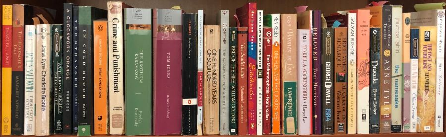

News & Events
Mother’s Day Tea and Homeschooling Beyond Schooling
Discussion
SchoolingDiscussion
Posted: April 25, 2019

Houghton's Pond Park Day group welcomes all home educators (moms and others) to Friday, May 10 tea and discussion of homeschooling beyond schooling with special guest Sophia Sayigh of AHEM. We'll talk about the many ways in which facilitating learning at home affects family life, juggling the needs of multiple children, preventing or coping with burnout, self-care, and finding community. This discussion is aimed at people currently home educating, but those considering homeschooling are welcome to attend.
This program will be held on Friday May 10th, 1 - 2:30 pm, rain or shine at Houghton's Pond, in Milton, MA.
Houghton's Pond Park Day is an open and inclusive gathering for families who are, or are interested in, home educating/homeschooling. Our mission is to encourage deeper connections within our diverse community through providing support, social opportunities, and group activities.
POPCORN AND PAGE TURNERS: RUNNING A TEEN BOOK GROUP
Posted: April 11, 2019
When my son, Fred, was 13, we decided to start a book group to read adult literature. I had never led a book group before—just had read a lot as a fiction lover—but was excited to give it a try. I had a certain framework that I was comfortable with and I was careful to put this out to prospective members of the group. They were to join only if they were sincerely interested, not because mom or dad thought it would be a good idea. I would choose the books, with the readers in mind, of course. They were committing to doing all the reading, and they weren't to come to book group (which met on Wednesday afternoons for two hours) unless they had completed the reading. This applied to my own kid as well. Maybe a risk, as I might choose a book they didn't really want to read, but it was part of the package. Read more.
Are Homeschoolers Entitled to Participate in Public School Classes and Activities?
Posted April 11, 2019
At some point in their homeschooling experience, for varied and personal reasons, families may seek out classes, extracurricular activities, or athletic programs offered by their local school district. One might assume that a homeschooling family paying property taxes in their town would be entitled to gain full access to public school offerings, but it’s not quite that simple. Read more.
Bespoke Homeschooling Without Breaking the Bank
Posted February 21, 2019
You’ve made the leap, cut the cord, took the plunge–however you put it--you’ve pulled your kid out of school, or made the decision not to send them at all. Often this decision means the family budget also takes a hit, as one or both parents adjust their schedules and/or work hours to spend more time with the children. It could even mean one parent leaving the workforce for a time. Read more.
Legislative Update
Posted February 7, 2019
The Massachusetts Legislature began its 191st session on January 2, 2019. The various bills that AHEM tracked in the 190th session, regarding changes to the compulsory attendance age and other educational issues, have either died or been set aside for further study in the new session. Read more.
Unschooling as a Feminist Act
Posted January 3, 2019
When I was a young mother, I wore a t-shirt with the words: “The hand that rocks the cradle rocks the boat.” The phrase put a spin on a 19th century poem entitled “The Hand That Rocks the Cradle Rules the World” by American poet William Ross Wallace. I understood at the time that becoming a mother was increasing my desire to create change in the world, although I didn’t know where that would lead me. I had already realized that, as the feminist movement espoused, the personal is political. I had already challenged a few assumptions about how life was supposed to work—including rejecting both the style in which I’d been parenting and the institution of school as an effective vehicle for education. Read more.